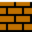
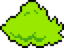

<!DOCTYPE html>
<html>
    <head>
        <meta charset="utf-8">
        <title>game 1</title>
        <style media="screen">
            div {
                outline: dashed lightskyblue;
            }
            canvas {
                border: 1px black solid;
            }
            .gua-inline-block {
                display: inline-block;
            }
        </style>
        <!-- gua game 相关文件 -->
        <script src='guagame/utils.js'></script>
        <script src='guagame/mouse.js'></script>
        <script src='guagame/gua_game.js'></script>
        <script src='guagame/gua_scene.js'></script>
        <script src='guagame/gua_image.js'></script>
        <script src='guagame/gua_particle.js'></script>
        <script src='guagame/gua_label.js'></script>
        <script src='guagame/gua_animation.js'></script>
        <script src='guagame/gua_map_data.js'></script>
        <script src='guagame/gua_tile_map.js'></script>
        <!-- 场景文件 -->
        <script src='scene/editor/brick.js'></script>
        <script src='scene/editor/mario.js'></script>
        <script src='scene/editor/scene_editor.js'></script>
        <!-- 配置数据 -->
        <script src='config.js'></script>
    </head>
    <body>
        <canvas id="id-canvas" width="512" height="480"></canvas>
        <!-- <div class="gua-inline-block">
            
            
            
            
        </div> -->
        <hr>
        <div id="id-debug-box"></div>
        <script src='scene/editor/action.js'></script>
        <!-- debug 模式 -->
        <script src='debug.js'></script>
        <script src=main.js></script>
    </body>
</html>
